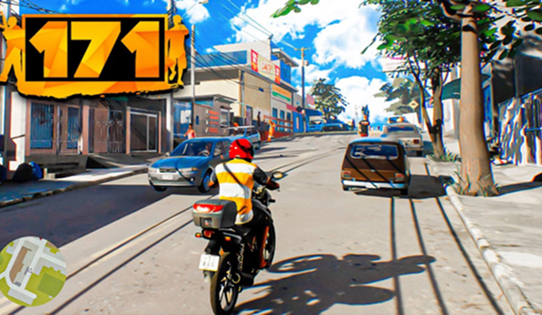

171
Desenvolvedores
sobre
171 é um jogo brasileiro de ação e aventura em mundo aberto, desenvolvido pelo estúdio Betagames
Group.
Inspirado por clássicos do gênero como Grand Theft Auto, o jogo é ambientado em uma cidade fictícia
fortemente baseada no cotidiano urbano brasileiro, com ruas, veículos, arquitetura e personagens que
refletem a realidade social, cultural e estética do país.
O jogador assume o papel de um cidadão inserido em um ambiente repleto de escolhas morais, podendo
explorar
livremente o mapa, conduzir veículos, interagir com NPCs, realizar missões diversas e optar entre
seguir
a
legalidade ou mergulhar no mundo do crime. A narrativa e os elementos de gameplay são moldados por
essas
decisões, promovendo múltiplos desdobramentos dentro da experiência.
O destaque de 171 está na sua autenticidade cultural, com gírias, trilha sonora, ambientes e
situações
inspirados no Brasil contemporâneo, oferecendo uma representação única e local do gênero sandbox.